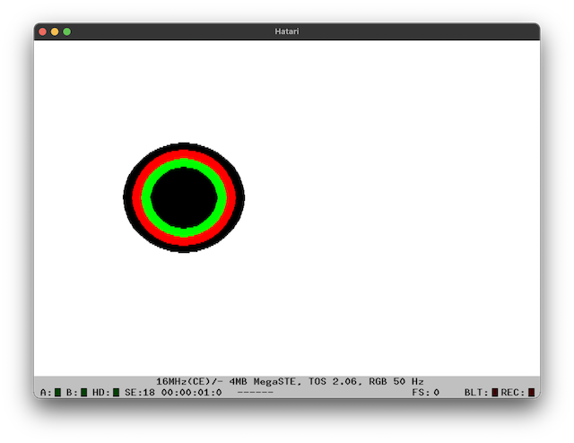

Got my first GEM program running. It's a stripped down version of the example VDI drawing program in C-Manship. The complexities here were related to my understanding of the functions used to draw, due to the Pure-C documentation being auf Deutsch. I can read a little german, but not programmer documentation german. The port from Pure-C was fairly straightforward, with only finding the header files for functions (not all are documented), and also which libs to include being slightly time consuming.
I grabbed the do_circle example and got that working. The comments in the code are executive versions of the translation via google from the german docs.
#include <aes.h>
#include <tos.h>
#include <vdi.h>
int work_in[11], work_out[57];
int handle;
int gr_hwchar, gr_hhchar, gr_hwbox, gr_hhbox;
void open_vwork(void);
void do_circle(void);
int main(void)
{
appl_init(); /* GEM - init application */
open_vwork();
do_circle();
v_clsvwk(handle); /* Close the virtual screen */
appl_exit(); /* GEM - exit application */
return (0);
}
void open_vwork(void)
{
int i;
for (i = 0; i < 10; work_in[i++] = 1)
{
}; /* setup work_in array with all values set to 1 */
work_in[2] = 2; /* apart from 2 (polyline colour), which is 2. */
/* get a graphics handle for this workstation */
handle = graf_handle(&gr_hwchar, &gr_hhchar, &gr_hwbox, &gr_hhbox);
v_opnvwk(work_in, &handle, work_out); /* Open the virtual screen */
}
void do_circle(void)
{
int color, radius;
/* Resets or empties the handles state - clear screen or line feed if printer */
v_clrwk(handle);
radius = 100;
for (color = 1; color < 8; ++color)
{
/* Set the fill colour */
vsf_color(handle, color);
/* Draw circle on handle, at x, y, of size radius */
v_circle(handle, 150, 100, radius);
radius -= 15;
}
/* Read an input character */
Cconin(); /* tos.h */
}
Not having done any GEM before, one of the things I learnt during this process was about the portability of GEM and drawing routines. GEM attempts to abstract output devices from their implementations, allowing the developer to treat an output device as an output device, regardless of where it renders. What this means in concrete terms is that when you print to a screen or a printer, the functions to do so are the same. This abstraction is really nice, and can free the dev from concerns of specific implementations in hardware. In reality, the developer totally needs to be aware of hardware nuances because of UX and quality concerns, but the API commonality across hardware devices is great.
And the project file to build the application (I may have too many libraries included, I was struggling to get it to build so just included a bunch of stuff and didn't go back and figure out what was actually required.
TEST.PRG
=
PCSTART.O
TEST.C
PCSTDLIB.LIB
PCTOSLIB.LIB
PCGEMLIB.LIB
And the output

This only shows 4 colours due to ST-Medium resolution. ST-Low should show the full 8, but I use mono when developing so more text can fit on screen at once - that just shows a single black circle.
Next up, AES and windows and resources - hopefully.